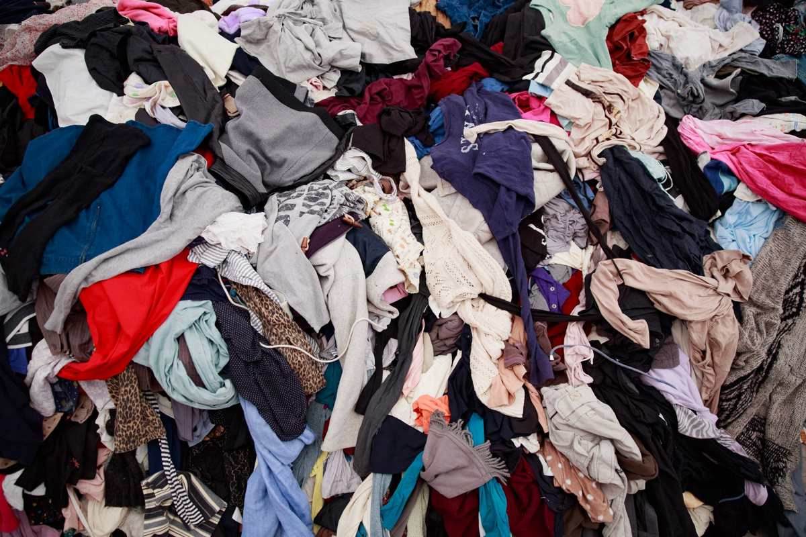

Clothes and linens are the slowest part of almost any cleanout. Everything ends up in one of three piles: wearable things a donation center will actually take, worn-out textiles that go to a recycler, and the rest, which leaves with the furniture. The sorting takes a weekend. The hauling takes an hour.
People plan a cleanout around the big items. The couch, the bed, the dresser, the boxes in the garage. Those go quickly, because a crew can pick one up and carry it out. Then the closets are still full, and there are more of them than anyone counted: the bedroom closets, the hall linen closet, the coat closet, the bins under the beds, the garment bags in the attic.
Why the closets take longer than the furniture
A dresser is one decision. A closet is four hundred of them.
That is the whole problem, and it is why soft goods are usually what stalls a house. Each shirt gets picked up, looked at, and put down somewhere, and there is no way to speed that up by adding people to it. If the house belonged to a parent, it slows down further, because clothes carry more memory per square foot than furniture does.
The practical move is to stop deciding item by item. Decide by category, out loud, before you open a door. Work coats stay. Everything in the guest room closet goes. The linen closet keeps one set of sheets and the rest is donated. A category rule you make in the hallway takes five seconds and clears a shelf.
Bag as you go, and label the bags. Three colors of bag, or three stacks in three rooms. An unlabeled pile of black bags gets re-sorted twice, once by you and once by whoever loads them.
The three piles that actually exist
Forget the four-pile system that works for a garage. Soft goods only have three real outcomes.
- Wearable and clean. This is the donation pile. Clothing in good shape, shoes with life left, coats, bags, unopened linens.
- Worn, stained or torn. Nobody is wearing it again, but the fiber still has somewhere to go. This is textile recycling, and it is a bin, not a donation counter.
- Wet, moldy, smoky or infested. This is a haul. It is not a donation and it is not a recycling bin, and trying to pass it off as either just moves the problem to a volunteer.
The third pile is bigger than people expect in a house that sat closed up through a North Texas summer. Cardboard boxes of stored clothing in a hot attic come out smelling like the attic, and a closet along an exterior wall that had any water in it will have a bottom shelf nobody wants to touch.
What a donation center will turn away
Donation centers are not a disposal service, and the fastest way to wear out your welcome at one is to hand over bags they have to pay to throw away. Habitat for Humanity publishes its own donation guidelines by location, and the same general lines hold across most of the DFW thrift and resale charities.
Usually refused: anything wet or mildewed, anything with an odor that survived a wash, used underwear and socks, opened toiletries, bed pillows, recalled cribs and car seats, and anything that arrives in a bag that has been rained on. Call the specific location before you load a car, because two branches of the same charity often take different things.
Where furniture is concerned, we already wrote the longer version. Where to donate furniture in DFW covers who takes what, which ones will send a truck, and what they refuse at the door.
Where the worn-out clothes actually go
Textiles nobody will wear are still a recyclable material, which surprises most people. They get processed into wiping rags, into insulation, and into fiber for carpet padding and automotive sound deadening.
The honest number is not flattering. EPA's textile figures put textile generation in the municipal waste stream at 17 million tons in a single year, with 11.3 million tons of that landfilled and about 2.5 million tons recycled. The pathway exists. Most of the material does not take it.
TCEQ keeps a statewide recycling overview covering the programs that operate in Texas, and several DFW cities and school districts run textile collection bins year round. If you have four bags of unwearable clothing and one afternoon, one of those bins is a better outcome than the trailer. We will say that out loud even though it is a smaller job for us.
What does not go in the bags
Closets are also where a surprising amount of household chemical ends up, and none of that leaves with us.
Mothballs are the common one, and they are not an air freshener. They are a registered pesticide, and old boxes of them in a cedar chest or a garment bag belong with the rest of the household chemicals rather than in a trash bag. The same goes for shoe polish, aerosol starch, spot removers, lighter fluid, and any half-empty bottle on the shelf above the coats.
Those go to your city's household chemical collection program. Plano publishes its list of accepted bulky waste items and runs a separate chemical collection program, and the pattern is similar across the northern suburbs. Our junk removal in Plano page has the local specifics.
One more pass is worth the time: pockets. Money, jewelry, keys and paperwork end up in coat pockets and in the toes of shoes, and once a bag is loaded nobody is going back through it. Ten minutes checking pockets before the bags are tied is worth more than anything else in this post.
What we haul off a closet job
Bagged clothing and linens, the bins and totes they were stored in, wire and plastic hangers by the armload, garment bags, shoe racks, hanging organizers, and the closet shelving itself if it is coming out. Mattresses and bed frames from the same room go on the same load.
If the house is being emptied entirely, the closets are just part of the estate cleanout and nobody sorts them separately. If you are moving, what to haul instead of moving covers the cut list that should happen before the movers quote the job, and closets are where most of that cut lives.
The crew looks at what is going and you get a firm number before anything is lifted. The quote is the bill, and disposal is included. You can send us photos and we will tell you what we see.
Frequently asked questions
Do I have to sort the clothes before you come?
No. If everything is going, we load it as it sits. Sorting only matters if you want part of it donated or recycled, and that is a decision you make, not us.
Will you take the bags to a donation center for us?
Usable items from a load go to local donation partners as a matter of course. If you want a specific charity to receive specific bags with a receipt, drop those off yourself, because a receipt has to be in your name to be worth anything.
What about clothes that got wet or have mold on them?
Those are a haul, not a donation. Bag them separately and keep them out of the donation stack so a volunteer does not have to make that call for you.
Can you take the closet shelving and rods too?
Yes. Wire shelving, wood shelving, rods and brackets come out with the rest. Tell us in advance if they are coming out so the crew brings what it needs.
What do I do with mothballs and old chemicals from the closet?
Those go to your city's household chemical collection program. We do not take household hazardous waste, and we will point you at the right program for your city.
Closets are the part of a cleanout people put off, and they are the part that decides whether the house actually empties this month. Everything else we haul is on the services page.